THE WATCHERS
A Minecraft horror mod. They come out after dark, and for two days they only watch.
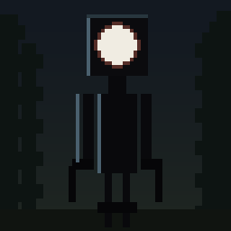
For two days nothing chases you. After dark something simply turns up beside you and stands there. Too tall by a long way — three times your height — thin, black, with arms that bend the wrong way and no face at all except one round white mouth.
It does not move while you are looking at it. Look straight at it and it knows, and it comes. Run, turn round, and it is not there. It was never hiding. It was taken away, and another one will be standing somewhere else in a minute.
On the third day they stop watching. They come for you and for whatever you have built, and from then on every night they arrive already hunting. A tower will not save you, because they climb. A wooden house will not save you, because they come straight through wood, glass, leaves, grass and dirt. Stone will, for now.
By the fourth day there is almost nothing left alive. What is left has black eyes, comes for you, and its legs stretch out under it as it runs. By the fifth the music has stopped. By the sixth there are more of them than there were, and it stays that way.
None of them are about in daylight. They arrive after dark, and any still standing when the sun comes up are taken away. Whatever you are going to do outside, do it in the morning.
The old spruce forests are the worst of it: fog you cannot see through, cobwebs hanging out of the trees, and far more of them in there than anywhere else. Stay for a minute and one will find you. Most of the villages are empty when you reach them. And somewhere within a thousand blocks of where you started, somebody built a bunker and did not come back out.
What happens
| Day | What changes |
|---|---|
| 1–2 | After dark they turn up beside you and watch. They do not move, and they are gone the moment you look away. |
| 3 | That night they stop watching. They come for you and for your base, and from now on every night they arrive already hunting. |
| 4 | Almost no animals left. The ones there are have black eyes, come for you, and their legs stretch as they run. |
| 5 | The music stops. Caves, weather, your own footsteps and whatever is still breathing. That is all you get. |
| 6 | More of them, every night, for good. |
The creature
Three times a player's height, and thin with it. Its arms are not built like yours: the upper arm hangs straight down, the forearm juts forward from the elbow, and the two move independently — the forearms twitch while the shoulders stay still. The legs are the same, jointed forward at the knee. It has no face except one round white mouth.
There is more than one of them, and they behave differently depending on the day. Before the third day they only watch: they stand still, they turn to face you, and they vanish the instant you stop looking. Stare straight at one and it drops the act and sprints.
It climbs, so height does not help. It breaks wood, glass, leaves, grass and dirt, so a wooden house does not help. It has a tongue that catches you from about fourteen blocks and reels you in. It hits for four hearts.
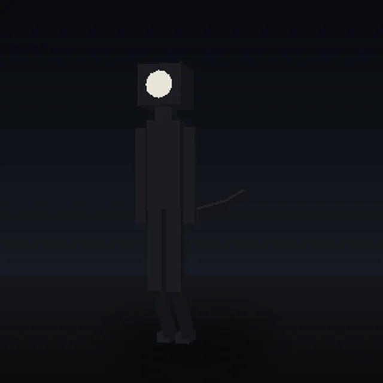
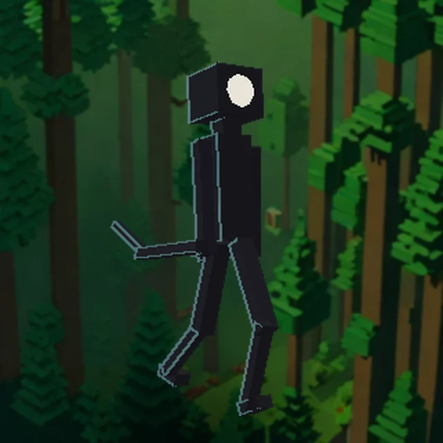
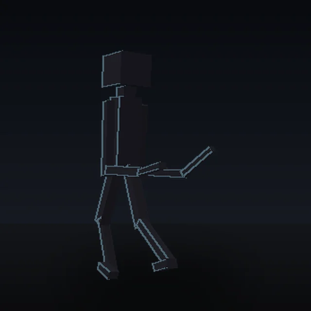
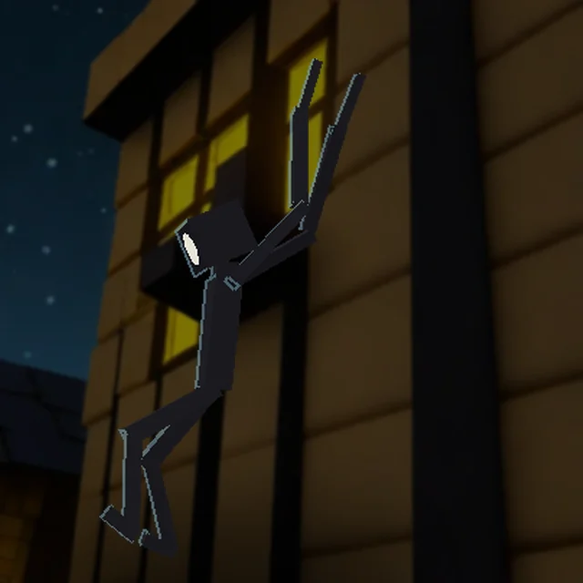
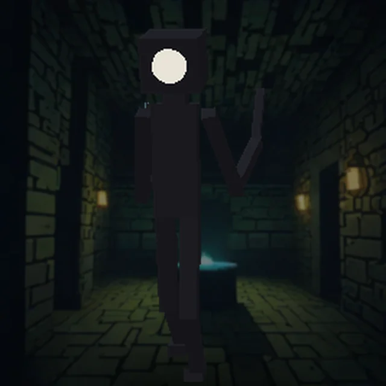
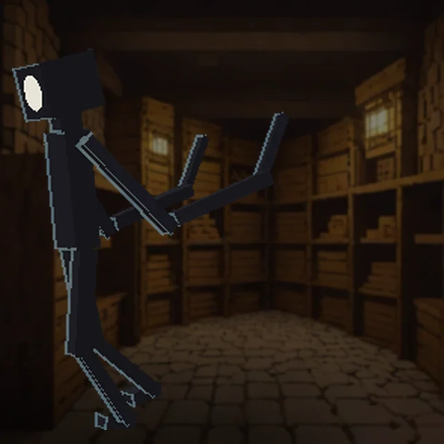
Those are drawn straight from the model file the game loads, by
tools/render-creature.py, so they are the creature rather than an
artist's idea of it. The pictures further down were made the other way round,
by an image model, for atmosphere.
The forest, the villages, the animals
- The old spruce forests have fog thick enough to lose a friend in, cobwebs hanging out of the canopy, and several times the usual number of Watchers. Stand still in one for a minute and one or two will arrive.
- Most villages are empty by the time you get there. The people are gone, the webs are not. A few are left alone, so finding a living one means something.
- From day 4 the animals are wrong. Most of them are simply not there any more. The ones that are have black eyes, come straight at you, and their legs stretch out underneath them as they run.
The bunkers
Somebody was here before you and they built these. They turn up in spruce forests: a wide circle of stone bricks on the surface with iron bars round the edge, and an iron trapdoor in the middle with a ladder going down.
Down below is a round room with a great stone cylinder standing in the middle of it and four iron doors, one in each direction.
- North — the store room. Two rows of double chests, scraps of cooked food, iron tools and armour worn nearly through, and cobblestone nobody ever used.
- East — collapsed. The ceiling came down and it is full of rubble.
- West — opens straight into an enormous cave. Nobody dug that.
- South — one small room with one chest in the middle of it, and one thing inside.
It hunts as night, It tasted flesh, and now we cannot return.
It hunts at night, it tasted prey, and now we cannot return.
Giant spruces grow around every bunker — far taller than the ones the game makes on its own, with trunks four blocks thick.
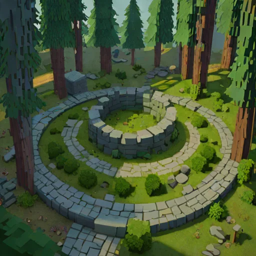

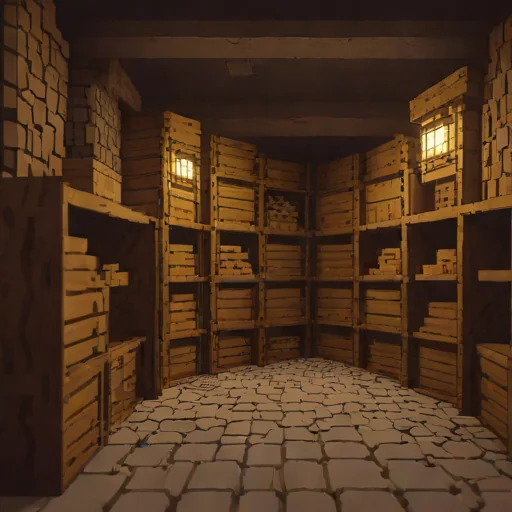
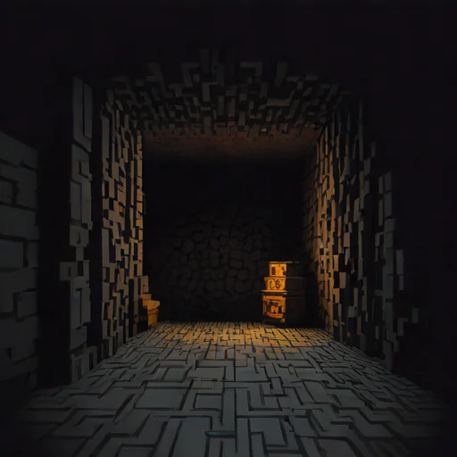
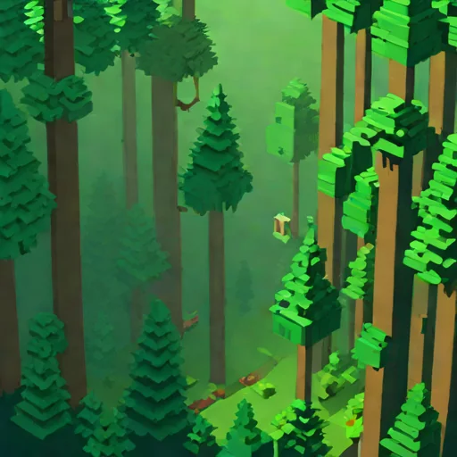
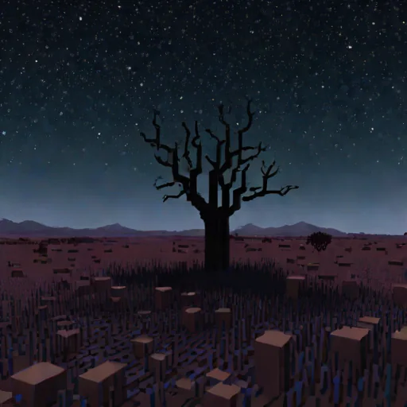
Get it
Two real files. If your browser will not save them, the buttons at the bottom of this page build the same two files inside the browser instead.
If double-clicking it does nothing
Only the Bedrock file is meant to open when you double-click it. The Java one is a data pack: double-clicking a data pack does nothing at all, ever, and that is not a fault. It has to be copied into a folder. See below.
If the Bedrock file does nothing either, it is almost always one of these. The first one is the usual answer on Windows:
- The file is not really called .mcaddon. Windows hides the end of
filenames, so
the-watchers.mcaddon.ziplooks identical tothe-watchers.mcaddonin Explorer — and double-clicking the first one does nothing useful. Turn on View → Show → File name extensions and look properly. If there is a.zipon the end, delete it. - Windows does not know what opens it. Right-click the file, choose Open with, and pick Minecraft. If Minecraft is not offered, it was installed in a way that never set the association up.
- Minecraft is already running. Close it completely, then double-click. It should start up and say it is importing.
- You are on a Mac. There is no Bedrock Edition for macOS at all, so
nothing on a Mac can open a
.mcaddon. A Mac runs Java Edition only — use the Java data pack. - You are on a console. Xbox, PlayStation and Switch cannot import add-ons directly. The usual way round it is to apply the pack to a Realm from a phone or a PC and then join that Realm from the console.
Still nothing? Put it in by hand instead — that always works.
Putting it in by hand on Windows
This skips the import entirely. It cannot fail to find Minecraft, because you are putting the files where Minecraft already looks.
- In File Explorer, turn on View → Show → File name extensions.
Do this first. Windows hides the end of filenames by default, which is how
a file called
the-watchers.mcaddon.ziplooks exactly likethe-watchers.mcaddon. - Rename
the-watchers.mcaddontothe-watchers.zipand unzip it. Inside are two folders,watchers_bpandwatchers_rp. - Press Windows+R, paste this in and press Enter:
%LOCALAPPDATA%\Packages\Microsoft.MinecraftUWP_8wekyb3d8bbwe\LocalState\games\com.mojang - Put
watchers_bpinto the behavior_packs folder, andwatchers_rpinto resource_packs. Note the American spelling of behavior — that is the folder's real name. - Start Minecraft, create a world, and turn The Watchers on under Behaviour Packs. Turn the resource pack on too, or the creature is invisible.
If the com.mojang folder is not there, Minecraft has never been
run on that machine. Start it once and it appears.
Where are you playing?
| Machine | Which file, and what to do with it |
|---|---|
| Windows PC | Either. For Bedrock, double-click the .mcaddon. For Java, the .zip goes in the datapacks folder. |
| Mac | Java only. There is no Bedrock for macOS. |
| iPad or iPhone | Bedrock. Download it, open the Files app, tap the file, and choose Minecraft. |
| Android | Bedrock. Download it, open Downloads, tap the file, and choose Minecraft. |
| Xbox, PlayStation, Switch | Neither, directly. Consoles cannot import add-ons. Put it on a Realm from a phone or PC and join the Realm. |
Installing it on Java Edition
- Make a new world to try it in, or a copy of one. This pack runs commands and digs holes, and it can wreck a world you care about. That cannot be undone.
- Download the zip above. Do not unzip it.
- In Minecraft, open your world's folder: Singleplayer → your world → Edit → Open World Folder.
- Drop the zip into the
datapacksfolder inside it. - Load the world and run
/reload. You should see The Watchers is loaded in the chat. If the pack shows up greyed out with a warning about the version, it will still turn on.
To check it is working before day 2, run /time set 14000 and then
/time add 24000 twice. The creature should turn up within a minute.
Installing it on Bedrock Edition
- Again: a new world, or a copy. Same reason.
- Download the
.mcaddonabove and open it. Minecraft takes it from there and imports both halves. - Make a world. Under Behaviour Packs turn on The Watchers; the resource pack comes with it. If it does not, turn that on too under Resource Packs — without it the creature is invisible.
- Turn on Experimental Features if the game asks. Leave Show Coordinates on if you want to find your way back.
If Minecraft refuses the pack, it is almost always one of two numbers in
watchers_bp/manifest.json: the
@minecraft/server version, or min_engine_version.
tools/check.py now checks both.
About the version numbers
Minecraft renumbered itself in 2026. What the launcher calls 26.45 is
engine 1.26.45 — the leading 1 was simply dropped. That matters
here because min_engine_version still wants the old shape:
[1, 26, 0], not [26, 45, 0].
The scripting API has its own numbering that has never matched the game's.
It went from 1.x to 2.x, the 1.x line
stopped at 1.19.0, and asking for a version that no longer
exists is enough on its own to stop an add-on installing. This one asks for
2.9.0.
The two editions are not the same build
They cannot be. Java reads data packs, Bedrock reads add-ons, and nothing is shared between them. Same idea, written twice, and each does what its own edition is good at. Bedrock wins most of these.
| Java | Bedrock | |
|---|---|---|
| The creature | An invisible zombie scaled up three times, wearing thirteen block displays dragged onto it every tick | A real custom mob with its own model, skin and animation |
| Its forearms | Fixed in place, pointing forward | Jointed and animated separately from the upper arm, which is what was asked for |
| Climbing | Faked: check for a wall, shove upwards | Real, using the component spiders use |
| Breaking blocks | A block tag and a setblock | The component ravagers use, with the same check as a backup |
| Fog in the forest | No. A Java data pack cannot touch fog; that needs a resource pack of its own | Yes, a real fog setting pushed on and off as you walk in and out |
| Black eyes | No. The turned animals glow black round the edges instead | Yes. A turned animal is replaced by a mob of our own with black eyes painted on |
| Legs stretching | No. | Yes, the legs scale as the animal runs at you |
| The timeline | mcfunction files and scoreboards | JavaScript. Bedrock has no way to get the day number into a scoreboard, so commands alone cannot do it |
| The book | A book and quill in the chest, with the words in it | Three signs. No Bedrock command can write in a book |
What it cannot do
- Black eyes. Neither edition gets them. That needs a texture pack built on top of Minecraft's own pictures of a cow and a pig, and those have to be painted by hand. On Java the turned animals glow black round the edges instead; on Bedrock they give off a wisp of dark smoke. If you paint the eyes, the texture pack can be built round them.
- The giant spruces are planted around the bunkers rather than being a proper new biome. A new biome means changing how the world generates, and a mistake there stops the whole pack loading.
- Java's creature is a puppet. An invisible zombie with block displays dragged onto it. Its pathfinding is a zombie's — good, not clever. Bedrock's is a real mob and behaves better.
- Bedrock's chests hold whole iron rather than nearly worn out iron, because the command that fills a chest there cannot say how used up a tool is.
None of this has been tested in the game. It was written on a computer with no Minecraft on it. A checker confirms both packs are put together correctly — every function resolves, every tag exists, the model and the animation agree about which bones there are — but it cannot say whether the game likes a command. Expect the first version to need fixing. Say what went wrong and it gets fixed.
If the download will not save
These build the same two files inside your browser out of the copies stored in this page, which sometimes works when a download does not. It also works with no internet at all.
Every file in it
Both packs are just text. Nothing here is hidden — click a file and read it.